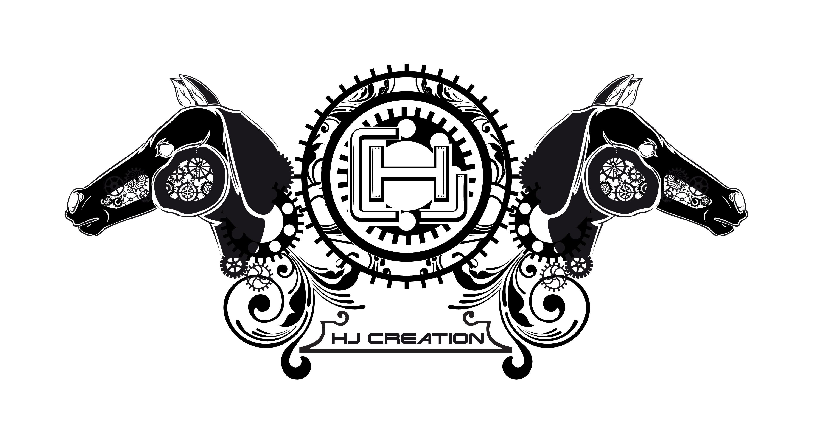

"Red Line"
Diseños Vectoriales
¿Qué es el diseño vectorial?
El diseño vectorial es el que permite la creación y edición de gráficos mediante vectores, lo que permite que los gráficos se puedan ampliar o reducir todo lo deseado, sin que pierdan calidad ni aparezcan pixelados. La otra variante del diseño gráfico es el mapa de bits, normalmente usado en fotografías.
¿Cuáles son los programas vectoriales?
Un programa vectorial es un software que te permite elaborar diseños a través de vectores (lineas que se pueden crear, expandir, modificar, etc. ... estos programas digamos hacen lo mismo pero de distintas formas (cambian las posiciones de las herramientas y los pasos a seguir), pero los resultados suelen ser parecidos.
Ejemplos de Diseños Vectoriales

¿Qué es un Vector?
Mas contenido...
Mapa de ubicación